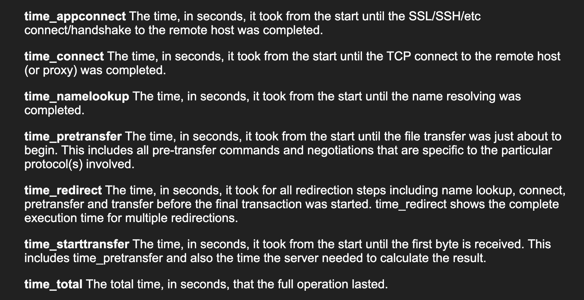

cURL 是我们常用的 http 命令行请求工具，它支持显示请求开始到响应结束各阶段的耗时，以便于开发中排查问题是网络原因还是服务器处理慢原因，主要是利用 -w 参数
curl -L -w "time_namelookup: %{time_namelookup}
time_connect: %{time_connect}
time_appconnect: %{time_appconnect}
time_pretransfer: %{time_pretransfer}
time_redirect: %{time_redirect}
time_starttransfer: %{time_starttransfer}
time_total: %{time_total}
http_code: %{http_code}
content_type: %{content_type}
speed_download: %{speed_download} (byte/s)
" https://example.com/
如果使用单行方便拷贝
curl -L -w "time_namelookup: %{time_namelookup}\ntime_connect: %{time_connect}\ntime_appconnect: %{time_appconnect}\ntime_pretransfer: %{time_pretransfer}\ntime_redirect: %{time_redirect}\ntime_starttransfer: %{time_starttransfer}\ntime_total: %{time_total}\nhttp_code: %{http_code}\ncontent_type: %{content_type}\nspeed_download: %{speed_download} (byte/s)\n" https://example.com/
返回如下
<!doctype html>
<html>
.....
</html>
time_namelookup: 0.007911
time_connect: 0.008221
time_appconnect: 0.415794
time_pretransfer: 0.415880
time_redirect: 0.000000
time_starttransfer: 0.618522
time_total: 0.618948
http_code: 200
content_type: text/html; charset=UTF-8
speed_download: 2034 (byte/s)
返回的各参数如下，这是官方文档上的截图

time_namelookup从开始到名称解析完成所花费的时间（以秒为单位）time_connect从开始到完成与远程主机（或代理）建立 TCP 连接所花费的时间（以秒为单位）time_appconnect从开始到完成与远程主机的 SSL/SSH 连接/握手所花费的时间（以秒为单位）time_pretransfer从开始到文件传输即将开始所花费的时间（以秒为单位）time_redirect在最终事务开始之前，中间所有重定向步骤所花费的时间（以秒为单位）time_starttransfer从开始到接收到第一个字节所花费的时间（以秒为单位）。这包括 time_pretransfer 以及服务器计算结果所需的时间time_total完整操作持续的总时间（以秒为单位）http_codeHTTP 响应代码content_type请求的 Content-Typespeed_download完整下载测得的平均下载速度 每秒字节数 (bytes/s)
根据上面的文档，我们就可以计算出客户端发出请求之后，服务器处理请求到开始发回数据所需要的时间是 0.610301 秒
time_starttransfer:0.618522 - time_connect:0.008221
客户端从服务器下载数据所用的时间是 0.000426 秒
time_total:0.618948 - time_starttransfer:0.618522
SSL/TLS 握手花费了 0.407573 秒
time_appconnect:0.415794 - time_connect:0.008221
对于没有 SSL/TLS 的明文连接(http://) time_appconnect 为零